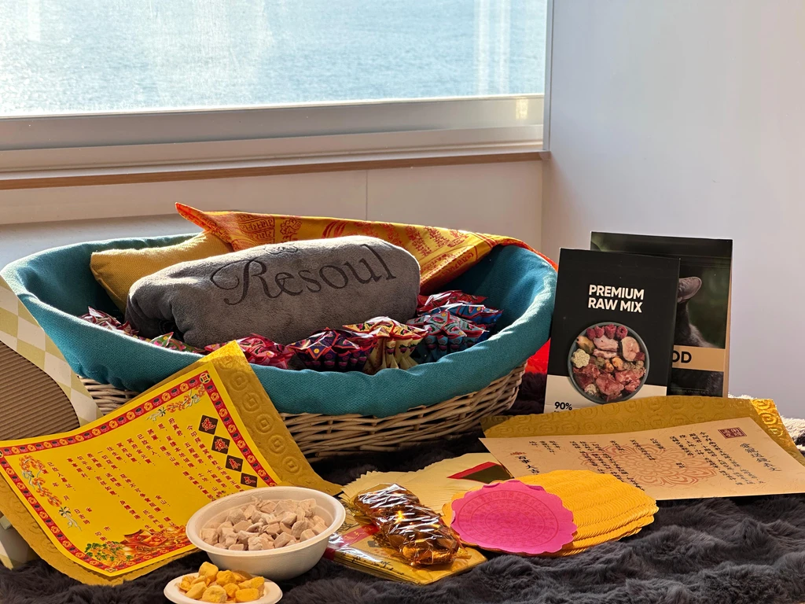
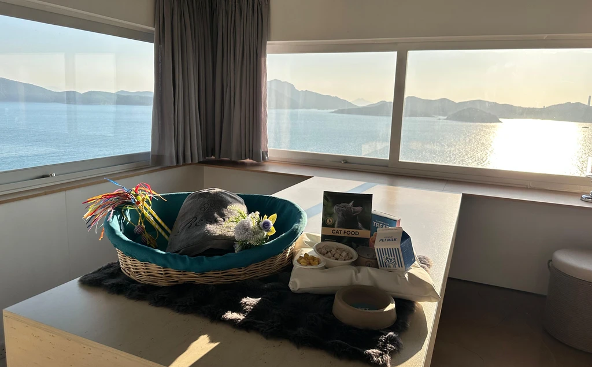

服務流程
每一步，都溫柔。
順著小腳印，一步一步，陪牠走完最後一段路。
-
1
24 小時全天候服務
致電我們，司機將在兩小時內抵達。
-
2
基礎清潔與消毒
之後單獨存放於冷凍庫中。
-
3
預約葬禮儀式及火化服務
-
4
沐浴及肌肉放鬆
-
5
海景告別儀式及私人火化服務
-
6
毛髮及骨灰紀念品選項
-
7
骨灰安排（三選一）
存放於本公司
骨灰罈領取或寄送
回歸大自然
火化服務
最偉大的愛，
值得最溫柔的再見。
失去摯愛的寵物，是我們人生中最深刻的痛之一。牠們不只是陪伴，更是家人，是毛茸茸的無條件愛。此刻的傷痛或許讓你喘不過氣——請允許自己悲傷，也在需要的時候依靠懂你的人。
我們承諾提供專業與細心的寵物火化服務，確保摯愛能與我們一起完成這段充滿愛與回憶的旅程。我們的專業團隊由擁有多年獸醫助護及寵物火化行業經驗的成員組成，務求以最溫柔及專業的態度，服務每一位家庭。


海景紀念室保證海景紀念室
在香港心臟地帶，Resoul 提供保證海景紀念室——一個寧靜、私密的空間，讓遼闊大海與金色日落成為你道別的溫柔背景。
當太陽沉入島嶼後方，天空染上暖色調，柔和光線灑滿房間，海浪低語安寧，每一刻都充滿平寧。在此，道別化為美好轉換：從旅程，到告別，再到永恆珍藏的回憶。
你最偉大的愛，值得這片風景、這份寧靜、這份永遠。